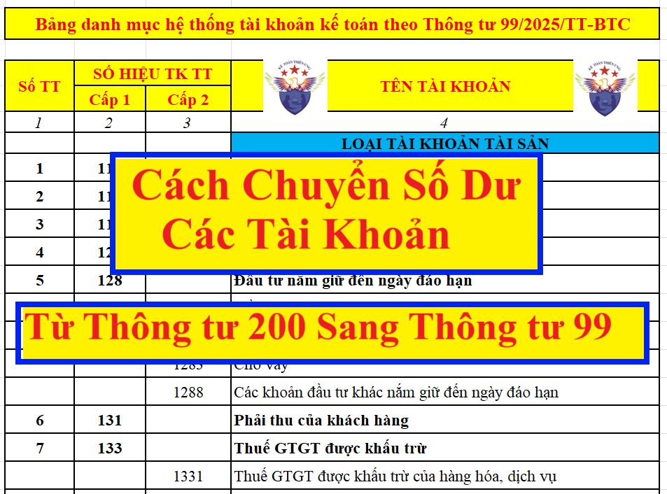
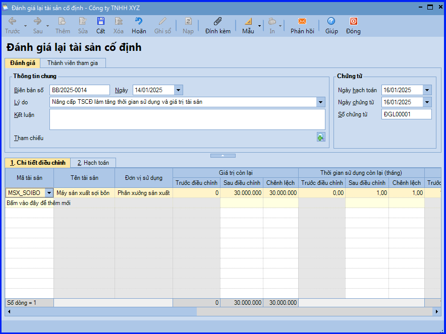
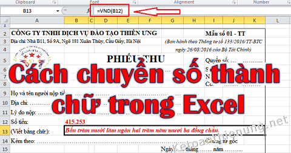
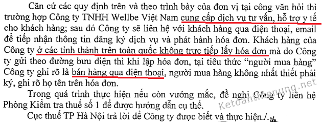

Hướng dẫn
Cách chuyển lỗ khi tạm tính, quyết toán thuế TNDN 2026
Hướng dẫn cách xác định lỗ và chuyển lỗ theo quy định tại Nghị định 320/2025/NĐ-CP hướng dẫn Luật Thuế thu nhập doanh n…
Kho hướng dẫn, biểu mẫu, công cụ và tài nguyên chuyên môn giúp tra cứu, áp dụng và triển khai công việc kế toán nhanh hơn.
Hướng dẫn cách xác định lỗ và chuyển lỗ theo quy định tại Nghị định 320/2025/NĐ-CP hướng dẫn Luật Thuế thu nhập doanh n…

Quyết định 15 đã được thay thế bằng Thông tư 200/2014/TT-BTC, trong đó có 1 số tài khoản đã được loại bỏ. Kế toán Diệu…

Hướng dẫn cách chuyển số dư các tài khoản trên sổ kế toán từ thông tư 200/2014/TT-BTC sang thông tư 99/2025/TT-BTC Theo…

Hướng dẫn cách chuyển số dư theo Thông tư 133. Cách chuyển số dư Đầu kỳ tài khoản bị xóa bỏ sang Tài khoản mới theo Thô…
.png)
Hướng dẫn cách đăng ký người phụ thuộc để tính giảm trừ gia cảnh khi tính thuế TNCN I. Quy định về đăng ký người phu…

Hướng dẫn cách đánh giá lại Tài sản cố định trên phần mềm Misa Khi có nhu cầu đánh giá lại, bộ phận kế toán sẽ phát sin…

Cách hạch toán Tài khoản 611 - Mua hàng Theo Thông tư 200/2014/TT-BTC: Dùng để phản ánh trị giá nguyên liệu, vật liệ…

Hướng dẫn đổi số thành chữ trong Excel 2010, 2013, 2016, 2019; Cách chuyển số thành chữ trong Excel Acchelper, cách lập…

Chi phí thuê nhà của cá nhân, thuê văn phòng của cá nhân không có hoá đơn? Quy định về chi phí thuê nhà hợp lý; Chi phí…

Hướng dẫn cách ghi giảm Tài sản cố định trên Misa I. Các trường hợp cần ghi giảm Tài sản cố định - Thanh lý, nhượng bán…

Quy định bán hàng qua điện thoại như thế nào? Điều kiện đóng dấu bán hàng qua điện thoại...Hướng dẫn cách viết hóa đơn…

Hướng dẫn cách ghi Mẫu 01B-HSB Danh sách đề nghị hưởng Chế độ thai sản, ốm đau, dưỡng sức sau sinh, phục hồi sức khỏe;…